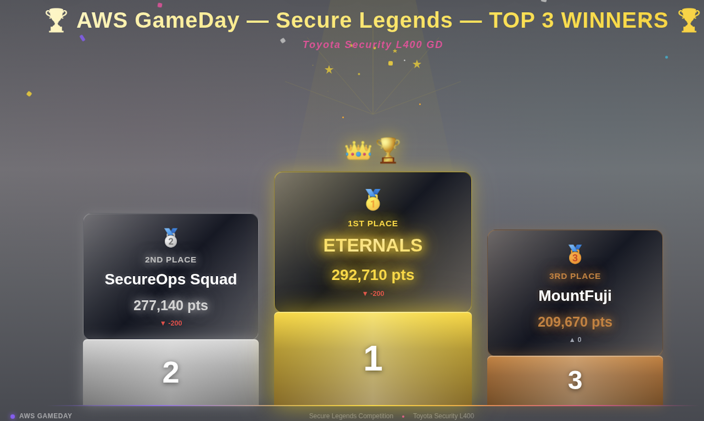

graph TB
%% ── Styles ──
classDef titleStyle fill:#1a1a2e,stroke:#e94560,color:#fff,font-weight:bold,font-size:16px
classDef problemStyle fill:#2d2d44,stroke:#e94560,color:#fff,font-weight:bold
classDef phaseStyle fill:#0f3460,stroke:#16213e,color:#fff,font-weight:bold,font-size:13px
classDef ec2Style fill:#ff6f00,stroke:#e65100,color:#fff,font-weight:bold
classDef albStyle fill:#7b1fa2,stroke:#4a148c,color:#fff,font-weight:bold
classDef wafStyle fill:#d32f2f,stroke:#b71c1c,color:#fff,font-weight:bold
classDef sgStyle fill:#1565c0,stroke:#0d47a1,color:#fff,font-weight:bold
classDef asgStyle fill:#2e7d32,stroke:#1b5e20,color:#fff,font-weight:bold
classDef shellStyle fill:#00838f,stroke:#006064,color:#fff,font-weight:bold
classDef actionStyle fill:#37474f,stroke:#263238,color:#e0e0e0,font-size:11px
classDef noteStyle fill:#fff3e0,stroke:#ff9800,color:#333,font-style:italic
%% ── Title & Problem ──
TITLE["🔬 FORENSICS ANALYSIS<br/>Unicorn Instances<br>Compromised!"]:::titleStyle
PROBLEM["🚨 Problem:<br>Identify compromised<br>instance <br> → Cordon it <br/> → Run analysis via <br> AWS CloudShell CLI <br> → Fix issues"]:::problemStyle
TITLE --> PROBLEM
%% ── IR Lifecycle Phases ──
PROBLEM --> DETECT
DETECT["🔍 PHASE 1: DETECT<br/>Identify<br/>the Compromise"]:::phaseStyle
CONTAIN["🔒 PHASE 2: CONTAIN<br/>Isolate & Cordon Off"]:::phaseStyle
INVESTIGATE["🕵️ PHASE 3: INVESTIGATE<br/>Analyze the Attack"]:::phaseStyle
REMEDIATE["🔧 PHASE 4: REMEDIATE<br/>Fix & Harden"]:::phaseStyle
RECOVER["✅ PHASE 5: RECOVER<br/>Restore Normal Operations"]:::phaseStyle
DETECT --> CONTAIN --> INVESTIGATE --> REMEDIATE --> RECOVER
%% ── DETECT Phase Services ──
DETECT --> ALB_DETECT["⚖️ ALB<br/>Enable Access Logs<br/>→ Capture client IPs, <br>request paths,<br/>response codes to S3"]:::albStyle
DETECT --> WAF_DETECT["🛡️ WAF<br/>Check Sampled Requests<br/>→ Inspect headers, body,<br/>source IPs to find <br/>the attack vector"]:::wafStyle
DETECT --> EC2_DETECT["🖥️ EC2<br/>Identify Compromised Instance<br/>→ Check metadata,<br/> user-data,<br/>system logs, IAM roles"]:::ec2Style
%% ── CONTAIN Phase Services ──
CONTAIN --> SG_CONTAIN["🔒 Security Group<br/>Quarantine Instance<br/>→ Restrict inbound:<br/> allow only forensic IP"]:::sgStyle
CONTAIN --> ALB_CONTAIN["⚖️ ALB<br/>Change Listener Rules<br/>→ Redirect/block traffic to<br/>compromised instance"]:::albStyle
CONTAIN --> ASG_CONTAIN["📈 Auto Scaling Group<br/>Detach Instance<br/>→ Remove from ASG to <br/>prevent auto-replacement<br/> & evidence loss<br/>→ Suspend scaling processes"]:::asgStyle
%% ── INVESTIGATE Phase Services ──
INVESTIGATE --> SHELL_INVESTIGATE["🐚 CloudShell<br/>CLI Forensic Workstation<br/>→ aws ec2 <br>describe-instances<br/>→ aws elbv2 <br>describe-target-health<br/>→ aws wafv2 <br>get-sampled-requests"]:::shellStyle
INVESTIGATE --> EC2_INVESTIGATE["🖥️ EC2<br/>Deep Dive Analysis<br/>→ Snapshot EBS volume<br>(evidence)<br/>→ Review instance <br>metadata & IMDS<br/>→ SSH in for live forensics"]:::ec2Style
INVESTIGATE --> ALB_INVESTIGATE["⚖️ ALB<br/>Analyze Access Logs<br/>→ Identify<br>suspicious traffic patterns<br/>→ Brute-force attempts, <br>exploit payloads"]:::albStyle
%% ── REMEDIATE Phase Services ──
REMEDIATE --> WAF_REMEDIATE["🛡️ WAF<br/>Tighten Rules<br/>→ Add IP blocklists<br/>→ Rate-based rules<br/>→ Geo-restrictions"]:::wafStyle
REMEDIATE --> SG_REMEDIATE["🔒 Security Group<br/>Harden Rules<br/>→ Remove <br>0.0.0.0/0 SSH access<br/>→ Apply <br>least-privilege networking"]:::sgStyle
REMEDIATE --> EC2_REMEDIATE["🖥️ EC2<br/>Terminate Compromised Instance<br/>→ Delete after <br>evidence captured<br/>→ Patch <br>AMI / launch template"]:::ec2Style
%% ── RECOVER Phase Services ──
RECOVER --> ASG_RECOVER["📈 Auto Scaling Group<br/>Restore Capacity<br/>→ Launch clean <br>replacement instances<br/>→ Resume <br>scaling processes<br/>→ Adjust <br>desired/min/max"]:::asgStyle
RECOVER --> ALB_RECOVER["⚖️ ALB<br/>Restore Routing<br/>→ Re-enable <br>listener rules<br/>→ Verify health <br>checks pass"]:::albStyle
RECOVER --> DONE["🎯 Unicorn Rentals<br/>Back Online & Hardened"]:::titleStyle

- My Team - Eternals - won the event!
- Thanks to my company Toyota Connected India and AWS for organizing the event (Apr’26)
The 3 AWS Security Quests
- Forensics Analysis: Identify, cordon off and remediate the compromised instances
- AWS Services: EC2 Instances, ALB, ASG, Security Groups, CloudShell (to run the commands)
- Data Classification & Protection: PII leak detection & automated response
- AWS Services: Lambda, Macie and EventBridge
- Credentials Management: Identity Compromise & Remediation
- AWS Services: CloudTrail, S3, IAM, Lambda
Our Strategy
The following steps we adopted helped in our success:
- Pre-event Preparation: Before the event day, we were given the problem statements. I ran it by an LLM provider to come up with plans in “mermaid chart” format for the 3 quests.
- The mermaid chart plans are shown in the subsequent portion of the blog
- During the event, logged into the AWS Console. Entered AWS CloudShell and logged in to the provided KiroCLI (the real hero 🦸)
- For each quest, we had a KiroCLI terminal (different team members owned their interaction with kirocli in cloudshell of the AWS account where we were solving the problem).
- Gave Proper Context to KiroCLI: We gave a mermaid chart with brief explanation of each quest so that the LLM in KiroCLI can understand the quest.
- KiroCLI which came up with a plan as per the quest and the mermaid charts.
- Approved the AWS CLI commands suggested by KiroCLI as and when required. Suggested new approaches if need be.
Quest 1 - Forensics Analysis
Problem Statement from AWS
Unicorn Instances have been compromised! The user will have to identify the compromised instance and then cordon it to run analysis. They will use AWS CloudShell and the command line to determine where the instances were compromised and fix any issues.
Services used:
- EC2 → May have to create or delete certain instance
- ALB → May need to enable access log. Change the listener rule
- WAF → may need to check sampled request.
- Security group → May need to modify inbound or outbound rule.
- Auto scaling group → Add or remove instance.
The Preparation Plan
Lessons Learned
graph TD
classDef titleStyle fill:#1b263b,stroke:#e63946,color:#fff,font-weight:bold,font-size:15px
classDef lessonStyle fill:#2a2a40,stroke:#e63946,color:#fff,font-weight:bold
classDef detailStyle fill:#37474f,stroke:#546e7a,color:#e0e0e0
classDef fixStyle fill:#005f73,stroke:#0a9396,color:#fff,font-weight:bold
TITLE["🔬 FORENSICS ANALYSIS<br/><br/>Lessons Learned"]:::titleStyle
TITLE --> L1
TITLE --> L2
TITLE --> L3
TITLE --> L4
TITLE --> L5
L1["❌ Lesson 1<br/><br/>Never ship<br/>backdoors"]:::lessonStyle
L1 --> L1D["The /backdoor endpoint<br/>used subprocess.run<br/>with shell=True.<br/><br/>This is a textbook<br/>RCE vulnerability."]:::detailStyle
L2["❌ Lesson 2<br/><br/>Separate ALB and<br/>instance Security Groups"]:::lessonStyle
L2 --> L2D["Instances should never<br/>be directly reachable<br/>from the internet.<br/><br/>ALB faces public traffic.<br/>Instances stay in<br/>private subnets only."]:::detailStyle
L3["❌ Lesson 3<br/><br/>Enable ALB<br/>access logs"]:::lessonStyle
L3 --> L3D["Access logs were disabled,<br/>making forensic analysis<br/>much harder.<br/><br/>Always log to S3 —<br/>you can't investigate<br/>what you don't record."]:::detailStyle
L4["❌ Lesson 4<br/><br/>Deploy WAF<br/>proactively"]:::lessonStyle
L4 --> L4D["A basic WAF with<br/>AWS Managed Rules<br/>would have caught this.<br/><br/>WAF is a first line<br/>of defense, not<br/>an afterthought."]:::detailStyle
L5["❌ Lesson 5<br/><br/>Principle of<br/>Least Privilege"]:::lessonStyle
L5 --> L5D["The Flask app ran with<br/>full OS-level access,<br/>allowing file encryption.<br/><br/>Apps should run as<br/>restricted users with<br/>minimal permissions."]:::detailStyle
Quest 2 - Data Classification & Protection
Problem Statement from AWS
Personal identity information is being leaked from Unicorn Rentals! The player will have to create a custom identifier and then apply it to the unicorn files stored in S3. They will then need to determine the source of the leak and put a stop to it.
Services used:
- Lambda – Modify Python code
- Macie → Create job for custom data identifier
- EventBridge → create rule
The Preparation Plan
┌─────────────────────────────────────────────────────────────────┐
│ DATA CLASSIFICATION PIPELINE │
├─────────────────────────────────────────────────────────────────┤
│ │
│ S3 Bucket │
│ (unicorn files with PII) │
│ │ │
│ ▼ │
│ Amazon Macie │
│ ┌──────────────────────────┐ │
│ │ • Custom Data Identifier │ ← You create this (regex-based) │
│ │ • Discovery Job │ ← Scans S3 objects │
│ │ • Findings generated │ │
│ └──────────┬───────────────┘ │
│ │ (finding event published) │
│ ▼ │
│ Amazon EventBridge │
│ ┌──────────────────────────┐ │
│ │ • Rule: match Macie │ │
│ │ finding events │ │
│ │ • Target: Lambda / SNS │ │
│ └──────────┬───────────────┘ │
│ │ (triggers) │
│ ▼ │
│ AWS Lambda │
│ ┌──────────────────────────┐ │
│ │ • Python code (modified) │ │
│ │ • Fix the PII leak │ │
│ │ • Quarantine / remediate │ │
│ └──────────────────────────┘ │
│ │
└─────────────────────────────────────────────────────────────────┘We did not know about Amazon Macie:
- Amazon Macie is a fully managed data security and privacy service that uses machine learning and pattern matching to discover, classify, and protect sensitive data stored in Amazon S3. It’s purpose-built for finding PII, financial data, credentials, and other sensitive content at scale.
How Macie fits the bigger picture for the problem
S3 Bucket (unicorn files)
│
▼
Macie Discovery Job
(managed + custom identifiers)
│
▼
Findings → "File X contains PII type Y at location Z"
│
▼
EventBridge Rule → triggers alert / remediationExample EventBridge Rule Pattern for Macie:
{
"source": ["aws.macie"],
"detail-type": ["Macie Finding"],
"detail": {
"severity": {
"description": ["High"]
}
}
}Lessons Learned
graph TD
classDef titleStyle fill:#1b263b,stroke:#e63946,color:#fff,font-weight:bold,font-size:15px
classDef lessonStyle fill:#2a2a40,stroke:#e63946,color:#fff,font-weight:bold
classDef detailStyle fill:#37474f,stroke:#546e7a,color:#e0e0e0
classDef fixStyle fill:#005f73,stroke:#0a9396,color:#fff,font-weight:bold
TITLE["🛡️ DATA CLASSIFICATION<br/> and PROTECTION<br/><br/>Lessons Learned"]:::titleStyle
TITLE --> L1
TITLE --> L2
TITLE --> L3
TITLE --> L4
TITLE --> L5
L1["❌ Lesson 1<br/><br/>Never log or return<br/>PII in plaintext"]:::lessonStyle
L1 --> L1D["Lambda was writing<br/>unredacted PII to logs<br/>and responses.<br/><br/>Always mask or tokenize<br/>before output."]:::detailStyle
L2["❌ Lesson 2<br/><br/>Enable Macie<br/>proactively"]:::lessonStyle
L2 --> L2D["Data classification should<br/>be continuous, not a<br/>forensic afterthought.<br/><br/>Scheduled Macie jobs catch<br/>leaks before customers do."]:::detailStyle
L3["❌ Lesson 3<br/><br/>Define custom<br/>data identifiers early"]:::lessonStyle
L3 --> L3D["AWS managed identifiers<br/>catch generic PII only.<br/><br/>Business-specific patterns<br/>like Unicorn customer IDs<br/>need custom regex rules."]:::detailStyle
L4["❌ Lesson 4<br/><br/>Automate response<br/>with EventBridge"]:::lessonStyle
L4 --> L4D["No rule existed to alert<br/>on Macie findings.<br/><br/>A simple EventBridge rule<br/>could trigger instant<br/>quarantine and notification."]:::detailStyle
L5["❌ Lesson 5<br/><br/>Treat S3 as a<br/>data boundary"]:::lessonStyle
L5 --> L5D["Every bucket holding<br/>customer data needs:<br/><br/>→ Server-side encryption<br/>→ Access logging<br/>→ Versioning<br/>→ Lifecycle policy"]:::detailStyle
Quest 3 - Credentials Management
Problem Statement from AWS
Credentials for Unicorn Rentals have been compromised. Players will have to identify that user that encrypted some of the Unicorn instances and update that users access.
Services used:
- CloudTrail.
- S3 → For website hosting. Check security of the static website, Bucket policy
- IAM role and user → may have to modify.
- Lambda → Minor Python code change
The Preparation Plan
graph TB
%% ── Styles ──
classDef titleStyle fill:#1b263b,stroke:#e63946,color:#fff,font-weight:bold,font-size:16px
classDef problemStyle fill:#2a2a40,stroke:#e63946,color:#fff,font-weight:bold
classDef phaseStyle fill:#003049,stroke:#1d3557,color:#fff,font-weight:bold,font-size:13px
classDef cloudtrailStyle fill:#6a040f,stroke:#370617,color:#fff,font-weight:bold
classDef s3Style fill:#ee9b00,stroke:#ca6702,color:#fff,font-weight:bold
classDef iamStyle fill:#005f73,stroke:#0a9396,color:#fff,font-weight:bold
classDef lambdaStyle fill:#7f5539,stroke:#9c6644,color:#fff,font-weight:bold
classDef actionStyle fill:#343a40,stroke:#212529,color:#e0e0e0,font-size:11px
classDef noteStyle fill:#fff3e0,stroke:#ff9800,color:#333,font-style:italic
%% ── Title & Problem ──
TITLE["🔐 CREDENTIALS MANAGEMENT<br/><br/>Unicorn Rentals<br/>Security Incident"]:::titleStyle
PROBLEM["🚨 Problem Statement:<br/><br/>Credentials have been compromised.<br/>Identify the user who encrypted<br/>Unicorn instances and update /<br/>revoke that user's access"]:::problemStyle
TITLE --> PROBLEM
%% ── Lifecycle Phases ──
PROBLEM --> DETECT
DETECT["🔍 PHASE 1: DETECT<br/><br/>Identify the<br/>Compromised Identity"]:::phaseStyle
ANALYZE["🧠 PHASE 2: ANALYZE<br/><br/>Understand<br/>Scope & Impact"]:::phaseStyle
CONTAIN["🔒 PHASE 3: CONTAIN<br/><br/>Restrict &<br/>Revoke Access"]:::phaseStyle
REMEDIATE["🔧 PHASE 4: REMEDIATE<br/><br/>Fix Config<br/>& Code"]:::phaseStyle
HARDEN["✅ PHASE 5: HARDEN<br/><br/>Prevent<br/>Recurrence"]:::phaseStyle
DETECT --> ANALYZE --> CONTAIN --> REMEDIATE --> HARDEN
%% ── DETECT ──
DETECT --> CT_DETECT["🔍 CloudTrail<br/><br/>Review Event History<br/><br/>→ Identify who performed<br/>encryption<br/>→ User / Role /<br/>IP / Timestamp"]:::cloudtrailStyle
%% ── ANALYZE ──
ANALYZE --> CT_ANALYZE["🔍 CloudTrail<br/><br/>Correlate API Calls<br/><br/>→ KMS / EC2 / S3<br/>encryption actions<br/>→ Confirm<br/>blast radius"]:::cloudtrailStyle
ANALYZE --> S3_ANALYZE["🪣 S3<br/><br/>Review Static<br/>Website Setup<br/><br/>→ Public access<br/>settings<br/>→ Bucket policy<br/>& ACLs"]:::s3Style
%% ── CONTAIN ──
CONTAIN --> IAM_CONTAIN["🔐 IAM<br/><br/>Modify User /<br/>Role Access<br/><br/>→ Revoke<br/>permissions<br/>→ Rotate<br/>credentials<br/>→ Disable<br/>compromised user"]:::iamStyle
CONTAIN --> S3_CONTAIN["🪣 S3<br/><br/>Restrict<br/>Bucket Access<br/><br/>→ Tighten<br/>bucket policies<br/>→ Block<br/>public access"]:::s3Style
%% ── REMEDIATE ──
REMEDIATE --> LAMBDA_REMEDIATE["⚡ Lambda<br/><br/>Minor Python<br/>Code Change<br/><br/>→ Remove<br/>insecure logic<br/>→ Patch workflow<br/>using credentials"]:::lambdaStyle
REMEDIATE --> IAM_REMEDIATE["🔐 IAM<br/><br/>Apply Least<br/>Privilege<br/><br/>→ Refine<br/>policies<br/>→ Remove unused<br/>permissions"]:::iamStyle
%% ── HARDEN ──
HARDEN --> CT_HARDEN["🔍 CloudTrail<br/><br/>Ensure Trails<br/>Enabled<br/><br/>→ Multi-region<br/>logging<br/>→ Long-term<br/>audit retention"]:::cloudtrailStyle
HARDEN --> IAM_HARDEN["🔐 IAM<br/><br/>Security<br/>Best Practices<br/><br/>→ Enforce MFA<br/>→ Access key<br/>rotation<br/>→ Role-based<br/>access"]:::iamStyle
HARDEN --> DONE["🎯 Unicorn Rentals<br/><br/>Credentials Secured<br/>& Monitored"]:::titleStyle
Lessons Learned
graph TD
classDef titleStyle fill:#1b263b,stroke:#e63946,color:#fff,font-weight:bold,font-size:15px
classDef lessonStyle fill:#2a2a40,stroke:#e63946,color:#fff,font-weight:bold
classDef detailStyle fill:#37474f,stroke:#546e7a,color:#e0e0e0
classDef fixStyle fill:#005f73,stroke:#0a9396,color:#fff,font-weight:bold
TITLE["🔐 CREDENTIALS MANAGEMENT<br/><br/>Lessons Learned"]:::titleStyle
TITLE --> L1
TITLE --> L2
TITLE --> L3
TITLE --> L4
TITLE --> L5
L1["❌ Lesson 1<br/><br/>Never hardcode<br/>credentials"]:::lessonStyle
L1 --> L1D["Static access keys<br/>are a ticking time bomb.<br/><br/>Rotate keys regularly.<br/>Use IAM roles instead."]:::detailStyle
L2["❌ Lesson 2<br/><br/>Enable CloudTrail<br/>from Day 1"]:::lessonStyle
L2 --> L2D["CloudTrail was used<br/>reactively for investigation.<br/><br/>It should alert proactively<br/>on anomalous API calls."]:::detailStyle
L3["❌ Lesson 3<br/><br/>Enforce least privilege<br/>on IAM"]:::lessonStyle
L3 --> L3D["Compromised user had<br/>permission to encrypt<br/>EC2 instances.<br/><br/>They should never<br/>have had that privilege."]:::detailStyle
L4["❌ Lesson 4<br/><br/>Harden S3<br/>static websites"]:::lessonStyle
L4 --> L4D["Bucket policies were<br/>overly permissive.<br/><br/>Use OAC + CloudFront,<br/>not public bucket policies."]:::detailStyle
L5["❌ Lesson 5<br/><br/>Audit Lambda<br/>execution roles"]:::lessonStyle
L5 --> L5D["Lambda IAM role had<br/>broader permissions<br/>than code required.<br/><br/>Tight scoping limits<br/>blast radius."]:::detailStyle
Conclusion
- KiroCLI’s direct access to AWS services via simple english language was both amazing and scary.
- We may not enable KiroCLI in production. But seems like a good tool in dev and pre-prod stages
- I had generous help during the event from KiroCLI (maybe it is the event winner 🤔)
- I converted majority of the text in this blog to mermaid charts for easier readability (with the help of LLMs, again ;) )